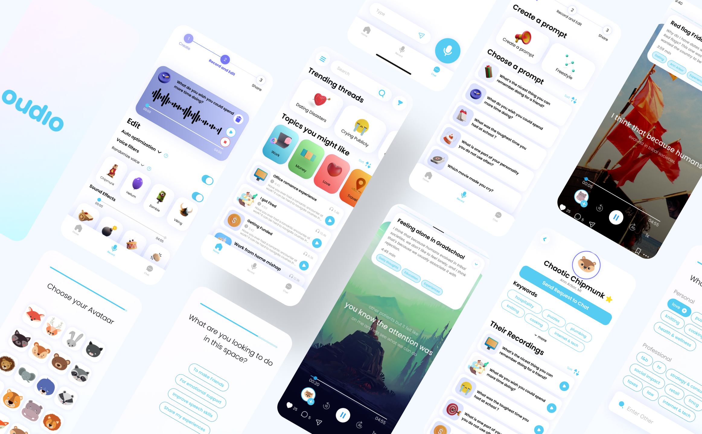
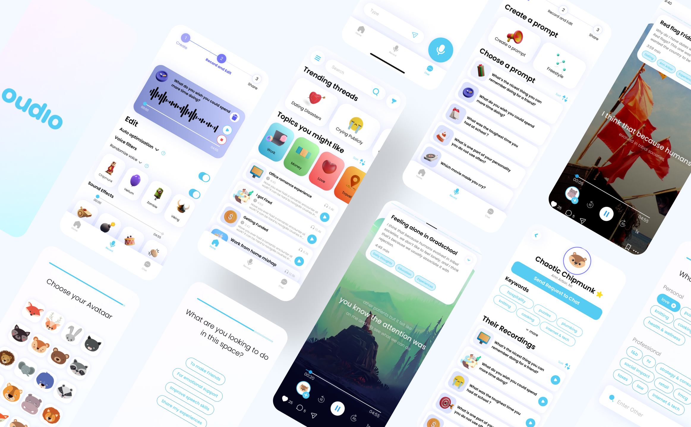

These are my featured projects
Project1:We designed a mission-driven non-profit system called Meow Planet that allows users to cyber adopt cats in cat shelters and creates social value by helping stray cats and shelters. Cyber adopters need to afford cats' living expenses. Cyber adopts can interact remotely with cats and participate in offline activities.
Project2:To help people make deep connections, we created Oudio, a DIY ALOG (audio blog) social platform. Here people can share their innermost, personal, and vulnerable stories anonymously and use voice to connect to each other. This project won 1st prize among 40+ teams in the +Tech Innovation Jam in Umich
 
